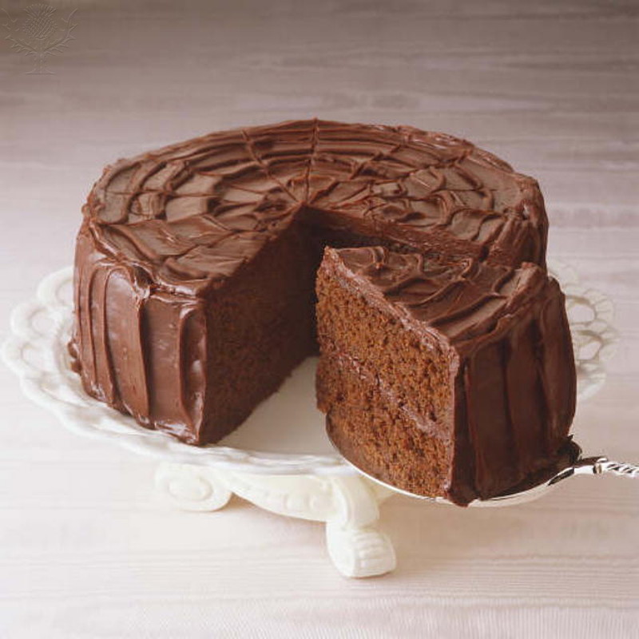

Little brownie cakes with fudge sauce
MAKES 8 // PREP TIME 20 MINS // COOK 35 MINS (PLUS COOLING)

These seemingly small cakes can easily be shared between two, depending on your tolerance for richness. That said, diehard chocoholics will have no trouble devouring the lot. Choose your audience – and portioning – accordingly.
- 190 gm butter, coarsely chopped
- 190 gm dark chocolate (60%-68% cocoa solids), coarsely chopped
- 210 gm brown sugar 3 eggs
- 130 gm plain flour 40 gm Dutch-process cocoa ¼ tsp baking powder
- 90 gm (½ cup) coarsely chopped milk chocolate
- 40 gm slivered or coarsely chopped pistachio nuts, plus extra finely chopped to serve Pistachio or vanilla ice-cream, to serve
Drop by the Student Life Centre Info Desk by Door 3 (Tim Hortons) at the Doon campus or call us at 748-5220 ext. 2948 for assistance.